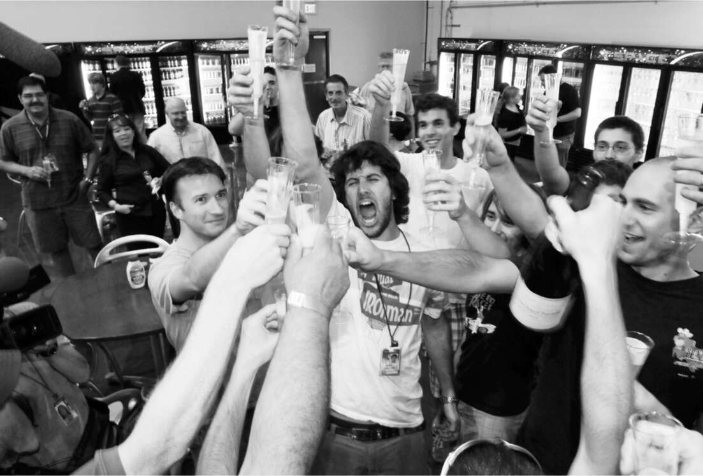

Vào quỹ đạo…
Cơ hội để Musk chứng minh rằng ông không "hơi điên rồ", hoặc ít nhất là ông cũng đáng tin cậy, đã đến hai tháng sau đó, vào tháng 6 năm 2010, khi Falcon 9 thử nghiệm chuyến bay không người lái đầu tiên vào quỹ đạo. Falcon 1 đã thất bại ba lần trước khi thành công, và tên lửa này lớn hơn và phức tạp hơn nhiều. Musk nghĩ rằng nó khó có thể thành công trong lần thử đầu tiên, nhưng áp lực rất lớn khi tổng thống đã biến việc phụ thuộc vào các vụ phóng thương mại như vậy thành chính sách của Mỹ. Như Wall Street Journal đã viết, "Một vụ phóng thất bại thảm hại có thể làm suy yếu thêm chiến dịch vốn đã lung lay của Nhà Trắng nhằm thuyết phục Quốc hội chi hàng tỷ đô la để giúp SpaceX và có thể hai đối thủ khác phát triển các phương tiện thương mại thay thế cho đội tàu con thoi sắp nghỉ hưu của NASA."
Cơ hội thành công càng trở nên mong manh khi một cơn bão ập đến, làm ướt sũng tên lửa. Buzza nhớ lại: "Ăng-ten của chúng tôi bị ướt và tín hiệu đo xa không tốt." Họ hạ tên lửa xuống khỏi bệ phóng, và Musk cùng Buzza ra ngoài kiểm tra thiệt hại. Bülent Altan, người hùng nấu món goulash ở Kwaj, trèo lên thang, xem xét các ăng-ten và xác nhận chúng quá ướt để hoạt động. Một giải pháp đặc trưng của SpaceX được ứng biến: họ lấy một chiếc máy sấy tóc, và Altan dùng nó sấy các ăng-ten cho đến khi khô. Musk hỏi anh ta: "Anh nghĩ ngày mai có thể bay được không?". Altan trả lời: "Chắc là được." Musk nhìn anh ta trong im lặng một lúc, đánh giá anh ta và câu trả lời của anh ta, rồi nói: "Được rồi, làm thôi."
Sáng hôm sau, việc kiểm tra tần số vô tuyến vẫn chưa hoàn hảo. Buzza nói: "Nó không đúng kiểu mẫu." Vì vậy, anh ấy nói với Musk rằng có thể sẽ bị trì hoãn thêm. Musk xem xét dữ liệu. Như thường lệ, ông sẵn sàng chấp nhận rủi ro nhiều hơn những người khác. Ông nói: "Đủ tốt rồi. Khởi động thôi." Buzza đồng ý. Anh ấy nói: "Điều quan trọng với Elon là nếu bạn nói với anh ấy về những rủi ro và cho anh ấy xem dữ liệu kỹ thuật, anh ấy sẽ nhanh chóng đánh giá và chuyển trách nhiệm từ vai bạn sang vai anh ấy."
Vụ phóng diễn ra hoàn hảo. Musk, người đã cùng đội ngũ hân hoan của mình tham dự một bữa tiệc thâu đêm trên cầu tàu Cocoa Beach, gọi đó là "một sự minh chứng cho những gì tổng thống đã đề xuất." Đó cũng là một sự minh chứng cho SpaceX. Chưa đầy tám năm kể từ khi thành lập, và hai năm sau khi đối mặt với nguy cơ phá sản, giờ đây nó đã trở thành công ty tên lửa tư nhân thành công nhất trên thế giới.
Thử nghiệm lớn tiếp theo, dự kiến vào cuối năm 2010, là để chứng minh rằng SpaceX không chỉ có thể phóng một khoang tàu không người lái vào quỹ đạo mà còn đưa nó trở lại Trái đất an toàn. Chưa có công ty tư nhân nào làm được điều đó. Trên thực tế, chỉ có ba chính phủ làm được: Hoa Kỳ, Nga và Trung Quốc.
Một lần nữa, Musk thể hiện sự sẵn sàng, gần như liều lĩnh, chấp nhận những rủi ro khiến chương trình của ông khác biệt với những chương trình do NASA điều hành. Một ngày trước ngày phóng dự kiến vào tháng 12, một cuộc kiểm tra bệ phóng cuối cùng đã phát hiện ra hai vết nứt nhỏ trên vỏ động cơ của tầng thứ hai của tên lửa. Garver nói: "Mọi người ở NASA đều cho rằng chúng tôi sẽ hoãn lại vụ phóng trong vài tuần. Kế hoạch thông thường sẽ là thay thế toàn bộ động cơ."
Musk hỏi nhóm của mình: "Nếu chúng ta chỉ cắt phần vỏ thì sao? Kiểu như, cắt xung quanh nó?". Nói cách khác, tại sao không cắt bỏ một chút phần đáy có hai vết nứt? Một kỹ sư cảnh báo rằng phần vỏ ngắn hơn sẽ đồng nghĩa với việc động cơ sẽ có lực đẩy ít hơn một chút, nhưng Musk tính toán rằng vẫn sẽ đủ để thực hiện nhiệm vụ. Phải mất chưa đầy một giờ để đưa ra quyết định. Sử dụng một chiếc kéo lớn, phần vỏ đã được cắt tỉa, và tên lửa được phóng vào nhiệm vụ quan trọng của nó vào ngày hôm sau, theo đúng kế hoạch. Garver nhớ lại: "NASA không thể làm gì khác ngoài việc chấp nhận các quyết định của SpaceX và chứng kiến trong sự hoài nghi."
Tên lửa đã có thể, như Musk dự đoán, đưa khoang tàu Dragon vào quỹ đạo. Sau đó, nó thực hiện các thao tác được giao và kích hoạt tên lửa hãm để quay trở lại Trái đất, hạ cánh nhẹ nhàng xuống vùng biển ngoài khơi California.
Tuyệt vời là vậy, nhưng Musk đã có một nhận thức tỉnh táo. Chương trình Mercury đã đạt được những kỳ tích tương tự năm mươi năm trước, trước khi ông hoặc Obama được sinh ra. Nước Mỹ chỉ đang bắt kịp với chính mình trong quá khứ.
SpaceX đã nhiều lần chứng minh mình nhanh nhạy hơn NASA. Một ví dụ điển hình là trong sứ mệnh lên Trạm Vũ trụ Quốc tế vào tháng 3 năm 2013, khi một van trong động cơ của tàu Dragon bị kẹt. Đội ngũ SpaceX ngay lập tức tìm cách hủy bỏ sứ mệnh và đưa tàu trở về an toàn trước khi nó gặp sự cố. Rồi họ nảy ra một ý tưởng táo bạo. Có lẽ họ có thể tăng áp suất phía trước van lên mức rất cao. Sau đó, nếu đột ngột giảm áp suất, van có thể bật mở. “Giống như thủ thuật Heimlich nhưng dành cho tàu vũ trụ vậy,” Musk sau đó nói với Christian Davenport của tờ Washington Post.
Hai quan chức cấp cao của NASA trong phòng điều khiển đứng quan sát các kỹ sư trẻ của SpaceX vạch ra kế hoạch. Một kỹ sư phần mềm của SpaceX đã viết ra đoạn mã để hướng dẫn tàu tăng áp suất, và họ truyền nó lên như thể đó là một bản cập nhật phần mềm cho xe Tesla.
Bùm, xoạch. Nó hoạt động. Van bật mở. Dragon cập bến Trạm Vũ trụ Quốc tế và sau đó trở về Trạm an toàn.
Điều đó đã mở đường cho thử thách lớn tiếp theo của SpaceX, một thử thách thậm chí còn lớn lao và mạo hiểm hơn. Được Garver thúc đẩy, chính quyền Obama đã quyết định rằng, một khi tàu con thoi ngừng hoạt động, Hoa Kỳ sẽ dựa vào các công ty tư nhân, đáng chú ý nhất là SpaceX, để phóng không chỉ hàng hóa mà cả con người lên quỹ đạo. Musk đã chuẩn bị cho điều đó. Ông đã yêu cầu các kỹ sư SpaceX lắp đặt một bộ phận không cần thiết cho việc vận chuyển hàng hóa vào tàu Dragon: một cửa sổ.

Marc Juncosa, ở giữa, nâng ly chúc mừng vụ phóng Falcon 9